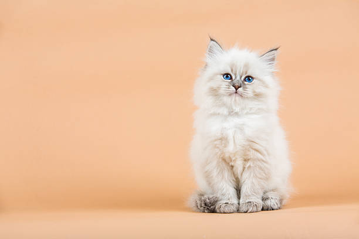

Mino

La salud de tu michi no debería ser un misterio.
Prevención silenciosa y asistencia de IA para dueños que aman a sus gatos.
Bitácora visual
IA Sweete
Dueños Fundador
Mino

Prevención silenciosa y asistencia de IA para dueños que aman a sus gatos.